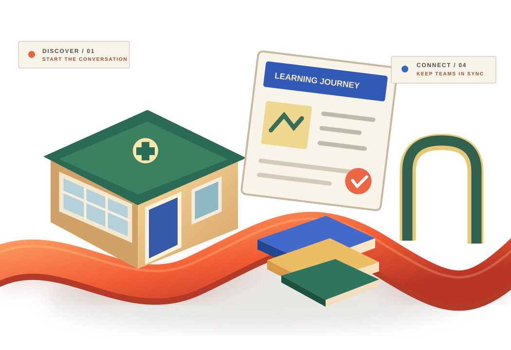

01 / DISCOVERY
Great programmes.
Hard to discover.
Prospective learners need accessible information about suitable programmes, requirements and contact options.
INDUSTRY 06 / EDUCATION BUSINESSES
From programme discovery to the first welcome, thoughtful communication makes a difference. Give prospective learners and education teams clearer information, better follow-up and a connected experience.
DISCOVER → ENQUIRE → ENROL → CONNECT

CONCEPTUAL ILLUSTRATION / NOT A REAL CAMPUS OR INSTITUTION
01 / THE BUSINESS REALITY
Education organisations juggle programme enquiries, prospect questions, intake deadlines and administrative handovers. The experience around learning deserves attention.
Prospective learners need accessible information about suitable programmes, requirements and contact options.
Inconsistent general enquiry responses can make important decisions harder to navigate.
Clear ownership of welcomes, documentation guidance and administrative updates benefits everyone.
02 / FOLLOW THE LEARNER JOURNEY
Explore a sample administrative journey, without pretending to provide learning management systems, admission decisions or student record services.
VISIBILITY / PROGRAMME INFORMATION
Help people find clear public information about programmes, opportunities and how to contact the right team.
03 / TAAMERAT360 SUPPORT
We focus on marketing, business communication and administrative coordination—not teaching, accreditation, student assessments or educational guarantees.
Connect appropriate audiences with clear programme and service messaging.
Explore packageOrganise general admissions enquiries, responses and follow-ups.
Explore packageGive staff a clearer administrative handover and responsibility process.
Explore packageMake the business journey more coherent across discovery and onboarding.
Explore package04 / VERIFY BEFORE WE CLAIM
Approved institution stories, campaign results and testimonials will appear here when the information and permission are supplied. No invented enrolment numbers, learner outcomes or accreditations.
Start with your own needs[Verified business challenge, approved approach and measurable outcomes]
05 / FIND THE FIRST IMPROVEMENT
Choose three general organisation preferences to create a copyable discussion brief. This is not an application form and does not collect student information.
Choose your education business needs and prepare a discussion starting point.
Your selections are not submitted or stored.
06 / RESPONSIBLE BOUNDARIES
No. This page explains general education-business marketing, enquiry response and administrative coordination. Teaching, learning management systems, grade processing, accreditation and admissions decisions are not included without an expressly agreed scope and appropriate safeguards.
No. The builder uses only fixed organisation categories. Do not enter student names, grades, personally identifying details, or information about minors. Any future processing would require separate privacy, security and regulatory review.
Potential integrations can be discussed during discovery. Technical compatibility, permissions, privacy requirements, deliverables and pricing must be confirmed before any commitment.
EDUCATION / THE NEXT CONVERSATION
Tell us the education-business challenge you'd like to solve first. We'll define practical next steps with clear boundaries.
Discuss your organisation